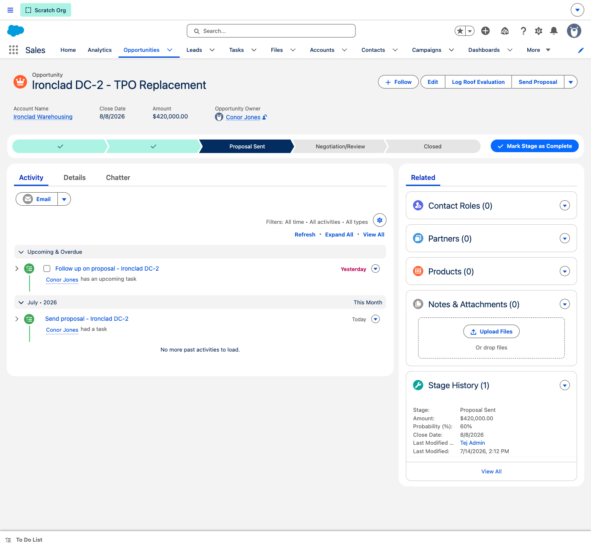
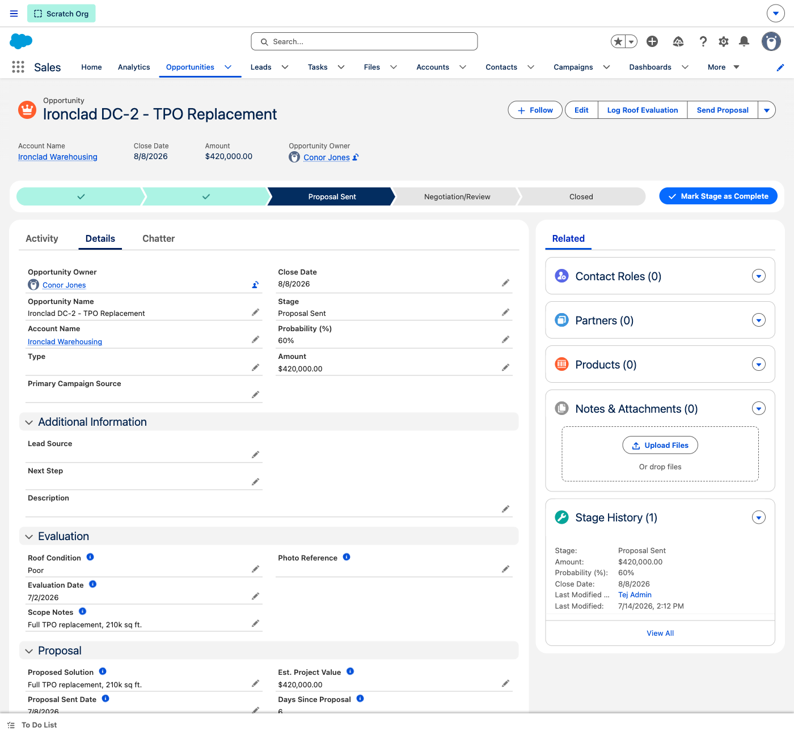
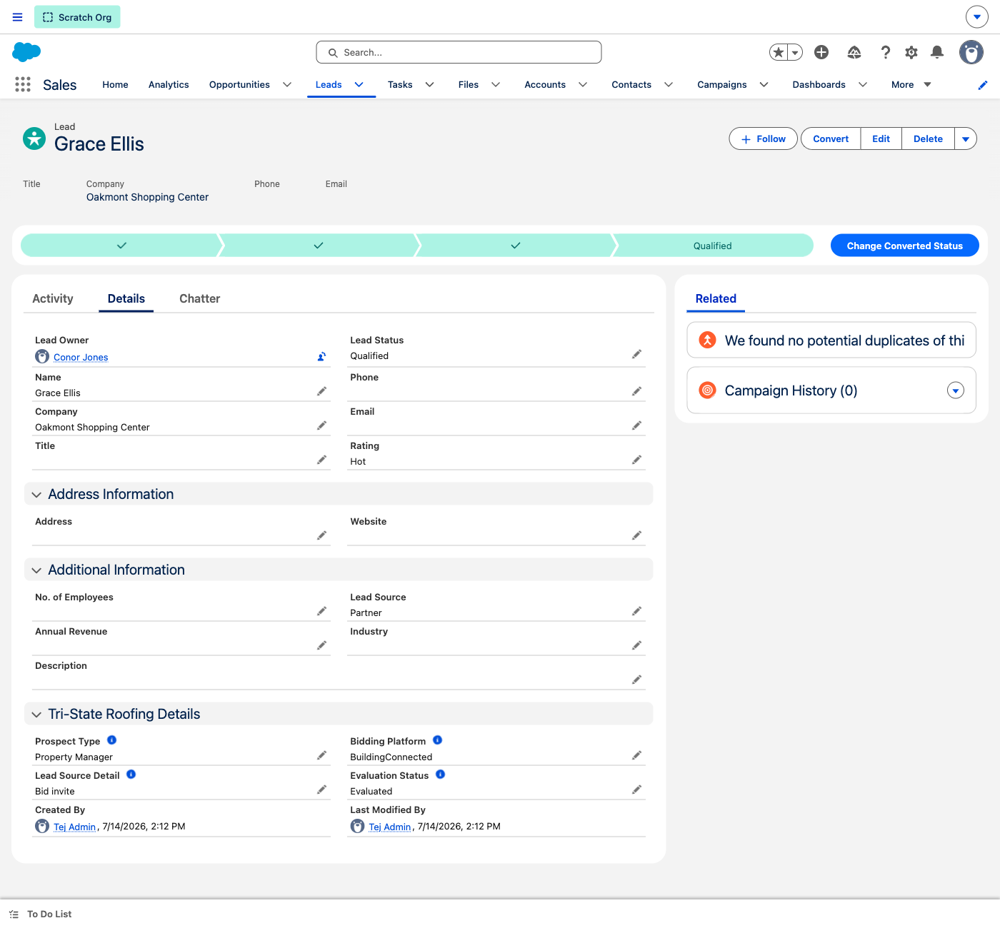
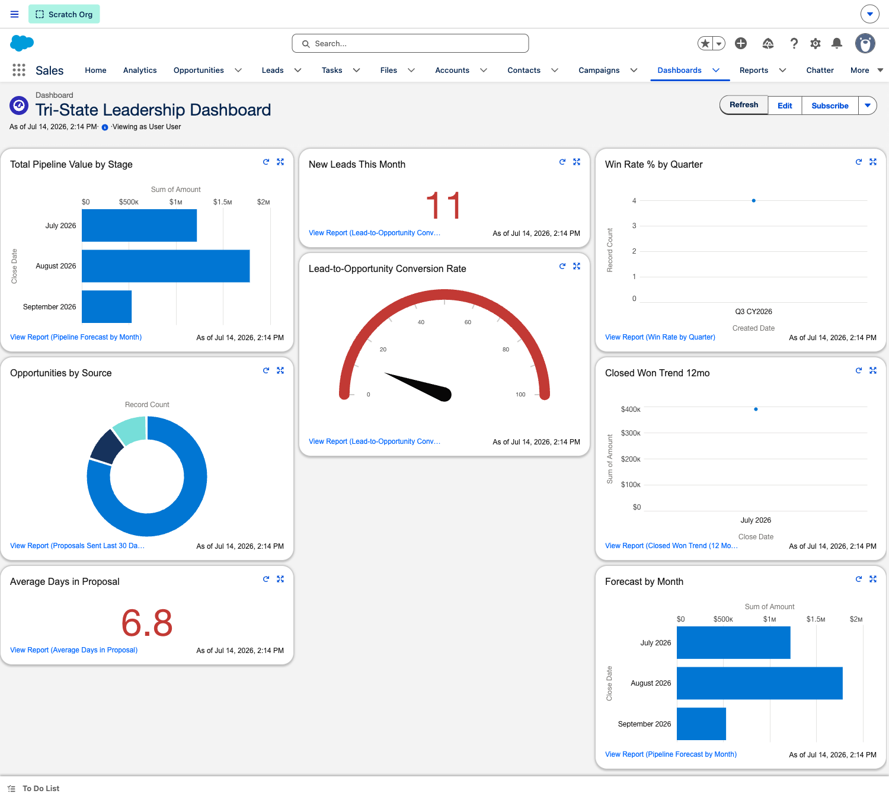

Relationship-driven roofing sales, out of Dropbox and Company Cam and into a real CRM — bidding-platform lead capture, on-site roof evaluations, proposal tracking, and follow-up automation that builds the repeat business Conor is after.
The 30-second context
Tri-State wins work through relationships — leads from BuildingConnected & BlueBook, networking at conferences, and referrals — but it all lives in Dropbox folders and Company Cam photos with no CRM behind it. This POC is that relationship-driven motion rebuilt in Sales Cloud: capture the lead, log the roof evaluation on-site, send and track the proposal, and never let a relationship go cold.
Prospects from bidding platforms and networking land as Leads — tagged by prospect type, platform, and evaluation status, ready for a roof walk.
Log roof condition, scope, photo references, and estimated project value right on the deal — a Sales Path guides Conor stage by stage.
Flows auto-create follow-up tasks when a proposal is sent and flag stale deals — so relationships turn into repeat business.
Open here · Validate first
Open by playing back Conor's world — it earns trust and frames the demo as the fix.
→ Tie every screen back to one of these as you go.
This is the proven pattern we deliver for contractors & field-services — native Sales Cloud first, tailored to Tri-State's roof-eval process. Not a heavy custom build.
Today is the foundation — lead capture, evaluations, proposal tracking. Later chapters add the Company Cam photo link and deeper nurture automation.
Pre-flight
Open the trial org in a clean browser window a few minutes early. Everything is seeded — nothing needs to be created live. (Note: this trial org expires July 21, 2026.)
The walkthrough
Four stops, ~12 minutes: a deal on the path, the roof-evaluation detail, lead capture, and the leadership roll-up.
Orientation
Ground the team in the objects first — this is the mental model everything hangs on.
💡 Talking point: "Today the prospect is on a bidding platform, the roof photos are in Company Cam, and the proposal is in Dropbox. Here it's one connected record — and a later chapter links the Company Cam photos right onto the deal."

"Every roofing deal is a record that moves through the same stages — Prospecting, Evaluation, Proposal Sent, Negotiation, Closed. Conor always knows the next step, and leadership can see which proposals are out and which deals are stalling."

"This is where the roof walk becomes data. Roof condition, scope notes, evaluation date, the proposed solution, estimated project value, and how many days the proposal's been out — all on the deal. This is what's in your head and your Dropbox folder today, now in one place."

"Every prospect from BuildingConnected, BlueBook, or a conference lands here — tagged with whether they're a building owner or property manager, which platform they came from, and where they are in evaluation. When one's ready, Conor converts it to a deal in a click and schedules the roof walk."

"This is the whole pipeline on one screen — total value by close month, new leads, win rate, conversion, average days a proposal sits, and the 12-month closed-won trend. This is what tells you where the business is headed, refreshed on demand."
Reference
The five stages every roofing deal moves through. Use this to answer "what does each stage mean?"
Initial contact from a bid, referral, or networking; interest established.
On-site roof walk — condition, scope, photos, and estimated value captured.
Estimate & proposal delivered; follow-up clock starts.
Scope, price, and schedule finalized with the owner.
Job won and handed off to operations — with a nurture task for repeat business.
What's configured
A focused Sales Cloud foundation — the process, the roofing-specific fields, and the reporting layer.
| Area | What's built |
|---|---|
| Record type | Tri-State Roofing — the Opportunity type for roofing deals. |
| Sales Path | 5-stage guided path (Prospecting → Evaluation → Proposal Sent → Negotiation → Closed Won). |
| Roof-eval fields | Roof Condition, Scope Notes, Evaluation Date, Photo Reference, Proposed Solution, Est. Project Value, Proposal Sent Date, Days Since Proposal. |
| Lead fields | Prospect Type, Bidding Platform, Lead Source Detail, Evaluation Status. |
| Quick actions & flows | Log Roof Evaluation, Send Proposal; flows auto-create follow-up & stale-deal tasks. |
| Reports & dashboard | 8 reports + the Tri-State Leadership Dashboard (pipeline, forecast, conversion, win rate, proposal aging). |
| Demo data | Conor + a second estimator · 9 building/owner accounts · 17 deals across all stages (~$3.1M open) · 11 bidding-platform leads · roof evaluations & logged activity. |
Quick reference
Prospecting 3 ($530K) · Evaluation 3 ($825K) · Proposal Sent 5 ($1.41M) · Negotiation 1 ($310K) · plus closed-won this quarter.
BuildingConnected & BlueBook bids, conference networking, and referrals — captured and qualified by evaluation status.
Appendix
Likely pushback from the Tri-State team, and how to answer it.
Dropbox and Company Cam work fine for us."
"They're great for files and photos — but nothing connects the prospect, the roof, and the proposal, and nothing reminds you to re-engage. This ties it all together, and a later chapter links Company Cam right onto the deal."
I'm the only one really selling — is this overkill?"
"That's exactly why it's built around you, Conor. The Sales Path and quick actions ('Log Roof Evaluation', 'Send Proposal') are one click each — it saves you time and gets the business out of your head."
How does this help with repeat business?"
"Every relationship stays alive — when a deal closes, a nurture task is created to check back, and stale proposals get flagged automatically. That recall is exactly how you win the next project."
My leads come from bidding platforms, not a website."
"That's handled — leads carry the bidding platform and prospect type, so BuildingConnected and BlueBook prospects are captured and qualified the same way, ready for a roof walk."
Can I see which proposals are going cold?"
"Yes — Days Since Proposal is on every deal, and a daily flow flags stale proposals so you re-engage before the owner moves on."
How long until we're live?"
"This foundation stood up fast on best practices. A production build — your real process, the Company Cam link, and any extra fields — is a few weeks, not months."